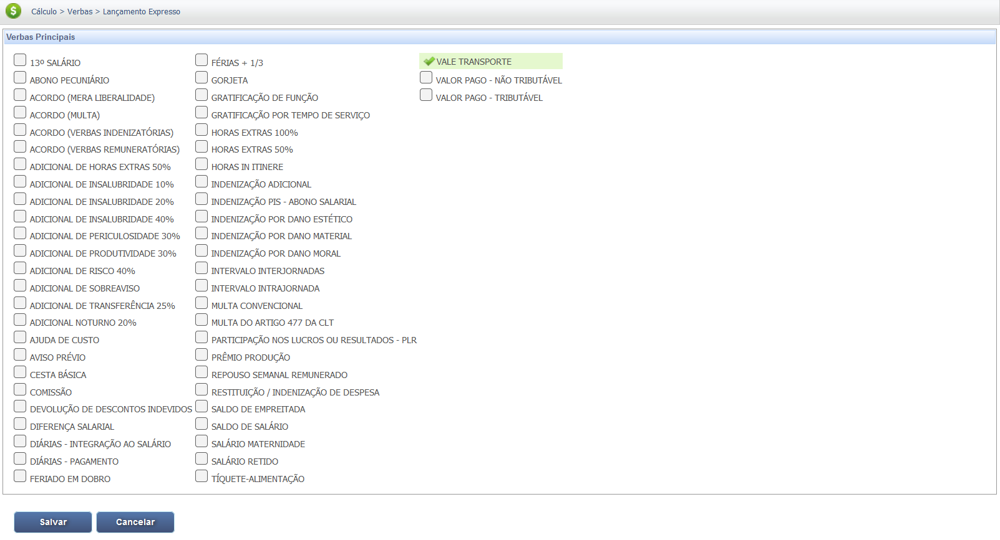
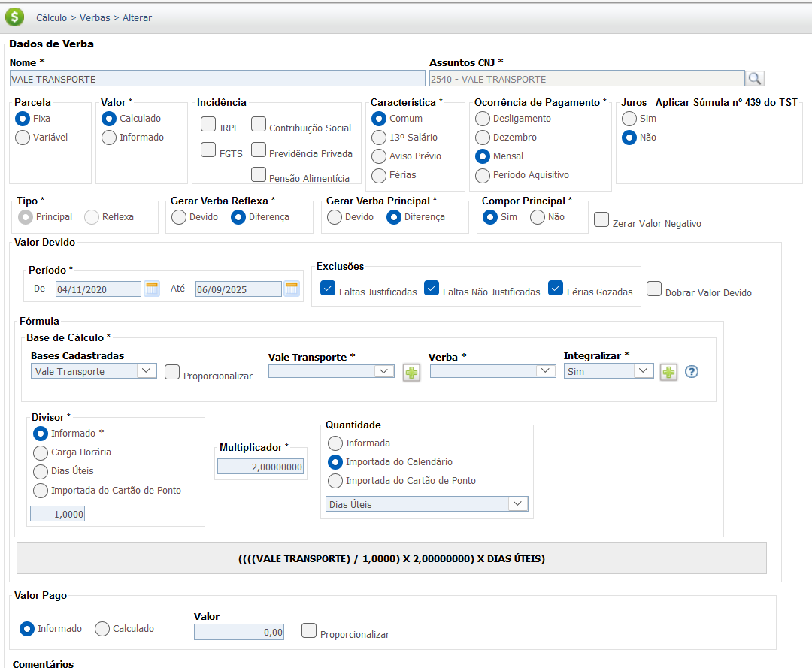
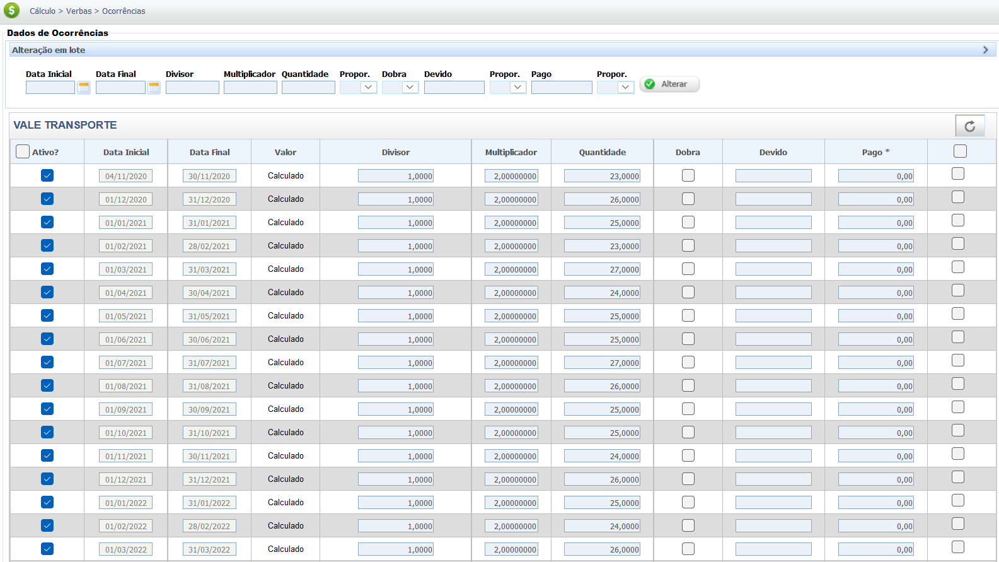

Vale-Transporte Trabalhista
O Vale-Transporte (VT) é um benefício obrigatório que o empregador deve antecipar para custear as despesas do trabalhador com o deslocamento residência-trabalho e vice-versa, por meio do sistema de transporte coletivo público.
Natureza Jurídica (Vale-Transporte)
1. Natureza Indenizável (Regra)
Conforme Art. 2º da Lei nº 7.418/85. Não integra o salário nem a remuneração, não gera encargos e nem reflexos.
- Não se incorpora à remuneração para qualquer efeito.
- Não constitui base de incidência de INSS, FGTS ou IRRF.
2. Natureza Salarial (Exceção/Descumprimento)
Se o VT for pago em dinheiro em descumprimento à lei (Súmula 259 STF) ou se o empregado não for descontado. Não se aplica se for pago em dinheiro por impossibilidade.
- Pago em Dinheiro em Desacordo com a Lei (Súmula 259 TST/OJ 373 SBDI-1 TST).
- Integra a base de cálculo e gera reflexos nas demais verbas.
Aspectos Fundamentais do Vale-Transporte:
O cálculo do Vale-Transporte envolve a apuração do valor devido ao empregado e o desconto máximo legal de 6%.
- Valor Devido: Total das despesas de transporte do empregado.
- Desconto: O empregador pode descontar no máximo 6% do salário básico do empregado.
- Cálculo: O valor a ser pago pelo empregador é a diferença entre o total da despesa e o desconto de 6%.
Base Legal e Jurisprudência
O direito ao Vale-Transporte tem por base a legislação a seguir:
Fontes Normativas
Lei nº 7.418/85:
- Art. 1º:
"Fica instituído o benefício do Vale-Transporte, nos termos desta Lei, para utilização efetiva em despesas de deslocamento residência-trabalho e vice-versa."
- Art. 2º:
"O Vale-Transporte não tem natureza salarial, não se incorpora à remuneração para quaisquer efeitos e não constitui base de incidência de encargos trabalhistas e previdenciários."
Decreto nº 95.247/87:
- Art. 7º:
"O empregador participará dos gastos de deslocamento do trabalhador com o Vale-Transporte, arcando com a parcela que exceder a 6% (seis por cento) do salário básico do empregado."
Jurisprudência
Natureza Indenizatória
Súmula nº 482 do TST:
"O Vale-Transporte, pago em conformidade com a Lei nº 7.418/85, possui natureza indenizatória e não salarial, não integrando a remuneração do empregado."
Pagamento em Dinheiro
Orientação Jurisprudencial nº 215 da SDI-1 do TST:
"O pagamento do Vale-Transporte em dinheiro, quando não comprovada a impossibilidade de fornecimento por meio de vale, descaracteriza sua natureza indenizatória, integrando-o ao salário para todos os efeitos."
Base de Cálculo e Deduções
O Vale-Transporte (VT) devido é o total da despesa do empregado subtraído do desconto máximo de 6% sobre seu salário básico.
Fórmula de Cálculo do Valor Devido (Mensal)
O valor total do VT a ser pago pelo empregador é a diferença entre a Despesa Total com Transporte e o Desconto de 6% sobre o Salário Básico (limitado ao menor valor entre os dois).
VT a Pagar = Despesa Total - (Salário Básico x 6%)
O empregador só arca com a diferença se o custo total do transporte for superior ao desconto de 6%.
Desconto Legal (6%)
- O desconto incide sobre o salário básico (sem adicionais, gratificações, etc.).
- O limite legal é de 6%. Se o custo do transporte for menor que 6%, o empregador deve descontar apenas o custo real.
Dedução:
Nos cálculos de VT, o valor descontado do empregado (até 6%) é uma dedução que o PJe-Calc deve considerar. O valor final da condenação de VT é o valor integral que deveria ter sido pago, subtraído do desconto de 6% já realizado ou a ser aplicado no cálculo.
Verbas Reflexas
O Vale-Transporte possui natureza indenizatória por lei. Apenas se houver decisão judicial expressa reconhecendo sua natureza salarial (geralmente por ter sido pago em dinheiro em desacordo com a lei), ele gerará reflexos.
Reflexos Comuns (em caso de integração salarial)
1. 13º Salário:
Se a verba Vale-Transporte (paga em dinheiro indevidamente) for considerada salarial, o valor pago mensalmente deve integrar o cálculo do 13º salário, na proporção de 1/12 por mês.
2. Férias e Terço Constitucional:
O valor salarial do VT deve compor a base de cálculo para as férias e o adicional de 1/3.
3. FGTS e INSS:
Apenas se houver decisão expressa reconhecendo a natureza salarial, o valor da verba integrará o cálculo para fins de incidência de FGTS (8%) e INSS.
Calculadora (Simulação)
Esta calculadora simula o valor do Vale-Transporte que deveria ter sido pago pelo empregador, considerando a despesa total e o limite de desconto legal (6% do salário básico).
Resultados da Simulação:
Desconto Máximo de 6% (R$):
R$ 0,00
VT Líquido Devido pelo Empregador (R$):
R$ 0,00
O VT líquido devido é a diferença entre a despesa total e o desconto (limitado a 6% do salário). Se o resultado for negativo (desconto maior que a despesa), o empregador não deve nada.
Lançamento no PJe-Calc
A seguir, confira o passo a passo para o lançamento da verba no PJe-Calc, utilizando a opção "Expresso":
-
Acessar Verbas e Escolher Lançamento: No menu de
navegação à esquerda, clique na opção Verbas para iniciar o lançamento. Após o
comando,
será exibida a tela para escolha do Lançamento da Verba. Escolha a opção Expresso.

- Seleção da Verba: O sistema abrirá as opções de verbas, escolha a verba Vale Transporte e clique no botão Salvar 
-
Quadro de Verbas e Ações: O sistema exibirá um quadro
com os campos:
- Ações - contendo as opções de configurações da verba selecionada (parâmetros,
ocorrências e
exclusão)

-
- Parâmetros da Verba

-
- Ocorrências da Verba

-
- Excluir

- Verba Principal - verba selecionada para lançamento.
- Verba Reflexa - em que ao clicar no botão Exibir serão listadas todas as verbas reflexas ligadas a Verba Principal.
- Parametrização da Verba: Ao clicar no botão Parâmetros da Verba serão exibidas todas as configurações necessárias para a parametrização da Verba Principal. 
- Registro de Ocorrências: Ao clicar no botão Ocorrências da Verba serão exibidas todas as configurações necessárias para registro das ocorrências da Verba Principal. 